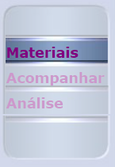
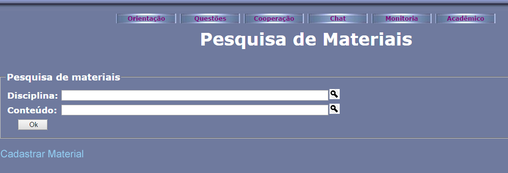
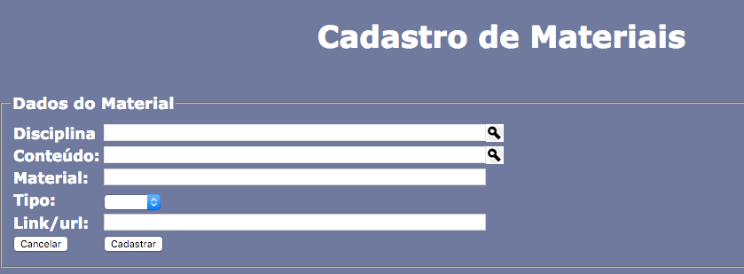
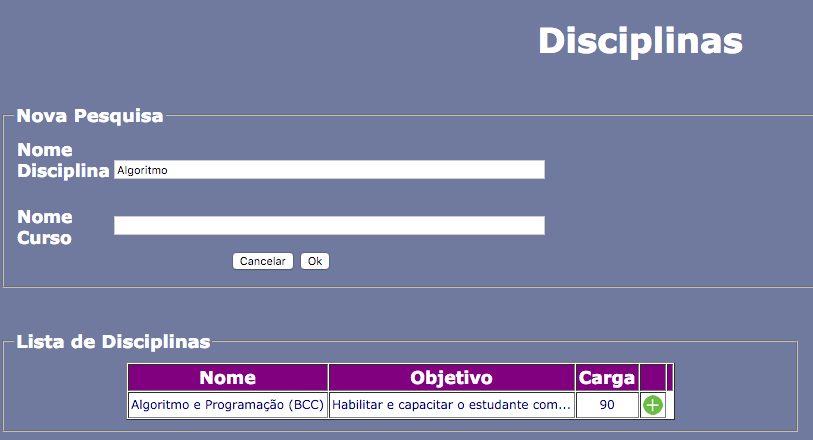

Para cadastrar Materiais de qualquer tipo, primeiramente você deve estar logado no SAE (Sistema de Apoio Educacional) no perfil de Professor. Para isso, acesse o SAE, preencha o campo Usuário e Senha, selecione a opção Professor e clique em Entrar, caso os dados estejam corretos, você será redirecionado para a página principal do SAE.
Para reproduzir o funcionamento do Sistema de Recomendacao no SAE, o exemplo será cadastrar um Material:
Clique na esfera "Material". Ao clicar nesta esfera, no menu lateral à sua esquerda aparecerão as opções: Materiais, Acompanhar e Análise.
Figura 1 - Esfera de Materiais.

Figura 2 - Menu lateral.
Clique na opção "Materiais", a primeira do menu lateral. Ao clicar nesta opção, aparecerá a tela "Pesquisa de Materiais". Em seguida, clique em "Cadastrar Material".
 Figura 3 - Tela Pesquisa de Materiais".
Com isso, aparecerá a tela "Cadastro de Materiais", onde será solicitado os "Dados do Material" que deseja cadastrar.
 Figura 4 - Tela "Pesquisa de Materiais".
Clique na lupa do campo "Disciplina" e abrirá uma tela onde será solicitado a Disciplina do Material a ser cadastrado. Nessa tela é possível pesquisar, de acordo com o Nome da Disciplina ou o Nome do Curso do qual a disciplina pertence. Nesse exemplo será usada a disciplina "Algoritmo e Programação (BCC)".
 Figura 5 - Tela "Disciplinas".
Agora clique na lupa do campo "Conteúdo" onde abrirá uma tela onde será solicitado o Conteúdo do Material a ser cadastrado. Nessa tela é possível pesquisar, de acordo com a Descrição do conteúdo no qual a disciplina pertence. Nesse exemplo será usada o conteúdo "Ambiente Computacional de Programação".
Figura 6 - Tela "Conteúdo".
Em seguida devemos preencher o campo "Material". Para isso insira o nome ou informação do material que será cadastrado. No exemplo usaremos "Ambiente Computacional em uma Maratona".
Figura 7 - Tela "Cadastro de Materiais" com o Material preenchido.
Nesse passo, clique na seta do campo "Tipo" para selecionar o tipo de material que deseja cadastrar. No exemplo usaremos "Site".
Figura 8 - Tela "Cadastro de Materiais" com o Tipo selecionado.
Em seguida clique no campo "Link/url" para inserir o endereço da página sobre o Marerial que deseja. Por fim, clique no botão "Cadastrar.
Figura 9 - Tela "Cadastro de Materiais" com o Link/url.
Assim que o cadastro for concluído, seu material estará disponível para todos os professores e alunos.